If your company is evaluating using the React Native technology for developing its native mobile application, you are probably wondering how to write and run the tests. The React Native testing docs really only focus on unit testing using Jest running in Node. You cannot see what the application is doing, and if something goes wrong, good luck debugging it.
For E2E testing, the docs suggest using Detox or Appium test runners. These runners require the application to be built before running the tests 🐢. The situation is dire. After inspecting the list of open source React Native apps at ReactNativeNews/React-Native-Apps I could not find any meaningful tests in great majority of them!
In this blog post I will explain how to run end-to-end tests against the web form of the React Native application using Cypress.io test runner. After all, you are probably developing the application by using the web form output, loading the app in the browser locally and working against localhost:xxxx. By running Cypress tests, you will see your full web application exercised in the browser, and if all tests pass, then you should build the native apps, and probably run some sanity native mobile tests.
🤨 But will this kind of testing find all the bugs? I think running end-to-end tests against your application while still in its web form would find most of the errors, such as logical mistakes, unexpected responses from the server, missing styles, etc. If you find a bug that cannot be detected by testing the React Native app in its web form, let me know.
Most of the sections in this post are covered by short videos in my Testing React Native Application Using Cypress video playlist. Some of the videos are embedded in the relevant sections of the post.
- The initial application
- The first Cypress test
- Continuous integration
- Network control
- Test the loading indicator
- Stubbing network call
- Code coverage
- What else?
- Help wanted
- See also
Note: I think the text below gives a good idea of what testing using Cypress is like. If you want an introduction to Cypress, check out one of my Cypress introduction or the official Cypress introduction doc.
The initial application
To create the application and run it locally, I used Expo.
1 | $ npm i -g expo-cli |
Let's scaffold a new blank "Hello world" project
1 | $ expo init my-react-native-project |
The created application has NPM script commands set up to start the application in the web and native forms.
1 | { |
🧭 You can find the source code at bahmutov/my-react-native-project
The application's main (and only) source file is the App.js showing the greeting message:
1 | import { StatusBar } from 'expo-status-bar'; |
Looks like a typical React application, doesn't it? Start the application with npm run web and open the localhost:19006 in the local browser. It is a normal web page bundled by Expo using Babel and bringing components from react-native library.
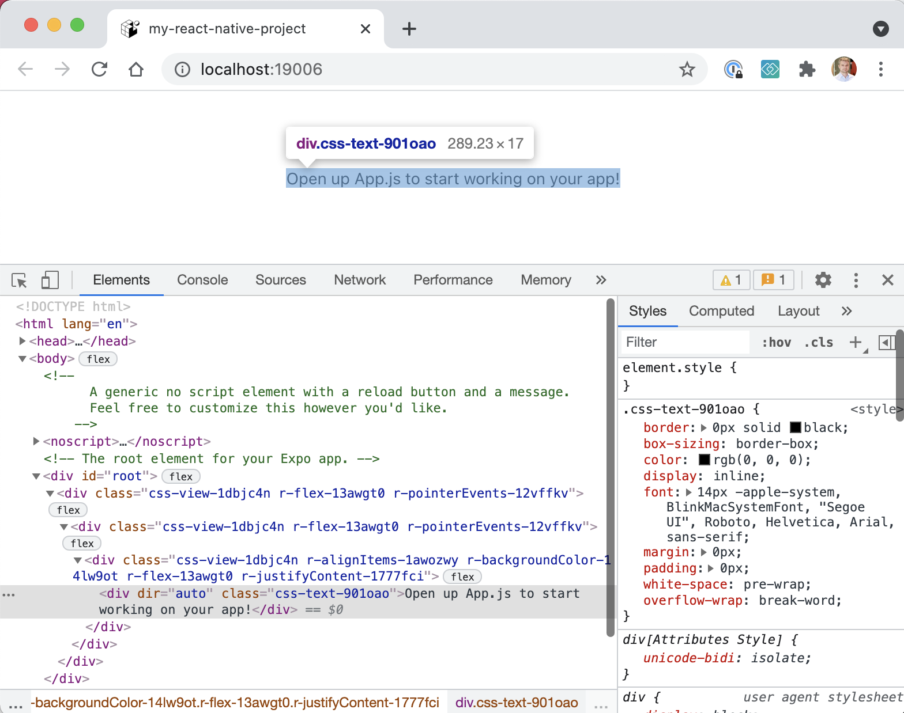
Great, let's write our first test.
The first Cypress test
Video: you can watch me write the first test in the video Testing React Native project using Cypress embedded below
First, we need to install Cypress
1 | $ npm i -D cypress |
Next, I will scaffold a bare-bones Cypress project using the @bahmutov/cly utility. Alternatively, you can open Cypress using npx cypress open command to scaffold the cypress.json file and cypress folder.
Let's put our Expo local URL into cypress.json file so our tests know what to load by default.
1 | { |
Let's write our first test - let's assert the text we saw on the page is visible.
1 | /// <reference types="cypress" /> |
Tip: the reference types line gives a hint to your code editor to load the type definition for the global cy object, so you have intelligent code completion when hovering over Cypress commands.
Open Cypress by using npx cypress open while Expo is running the application locally. Click on the "spec.js" file. The test confirms the React Native application shows the expected text.
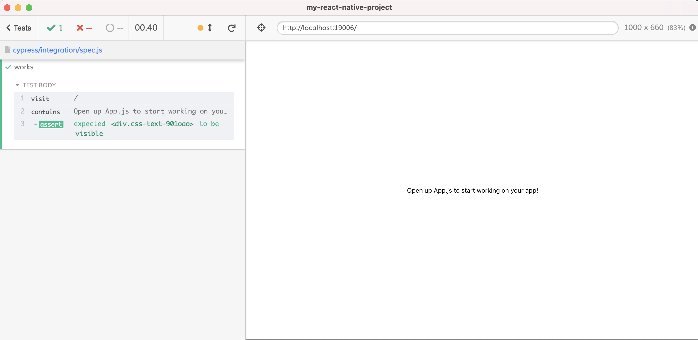
Tip: you can better simulate the realistic mobile device resolution by setting explicit viewportWidth and viewportHeight configuration options in the cypress.json file.
Pro tip: use utility start-server-and-test to run Expo and open Cypress with a single command. The utility will even close Expo when Cypress finishes and exits.
Continuous integration
Video: you can watch me run tests on CI in the video Run Cypress React Native Tests Using GitHub Actions embedded below
To run E2E tests on CI, we have lots of options. Because I already have the project on GitHub, I will use GH Actions to run its tests. Here is my workflow file to run the tests on each commit and pull request.
1 | name: End-to-end tests |
Note: the script npm run web requires Expo CLI installed on the machine. I simply added the expo as a dev dependency to my project.
From now on, I will try to keep the status checks green to make sure the project always works.
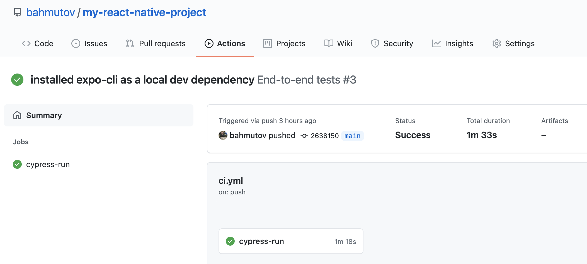
Network control
Video: you can watch me write the network test in the video Test an Ajax Call From React Native App Using Cypress embedded below
Let's replace our "Hello World" application with an app that fetches the data from the server and displays the list of users.
1 | import React, { useEffect, useState } from 'react'; |
The application uses fetch browser API method to make the call. Does the application work? We need to confirm it from our test. I will use the powerful cy.intercept command to spy on the network call. When the call returns, the test can grab the response and confirm the number of users displayed equals the number of users returned.
1 | /// <reference types="cypress" /> |
Note: I have added testID="user" accessibilityLabel="user" props to the <Text> component. These props are rendered as data-testid and aria-label in the web output, which allows the test runner to select the right elements.
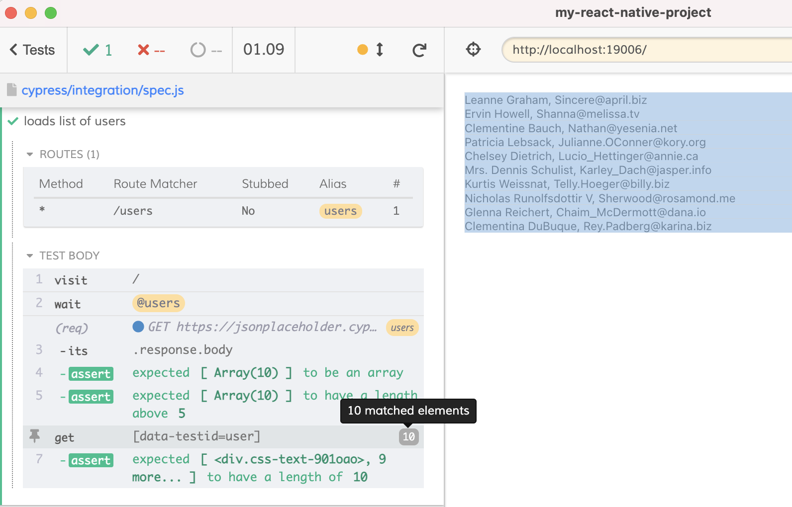
Test the loading indicator
Video: you can watch me write test for the loading indicator in the video Testing The Loading Indicator by Slowing Down The Request embedded below
While the application is loading, there is a brief (well, its depends on the network and server speed) appearance by the loading indicator. The indicator is defined by the application:
1 | {isLoading ? <ActivityIndicator testID="loading"/> : ...} |
Can we verify the loading indicator really shows up and disappears? We can slow down the response by using a cy.intercept request handler that returns a promise.
1 | it('shows loading indicator', () => { |
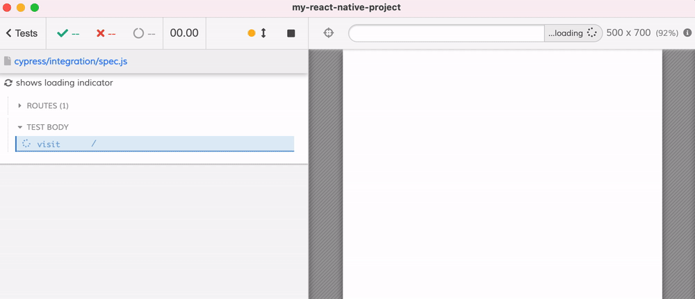
Tip: be careful when using negative assertions like .should('not.exist') - they can pass for a wrong reason! Read my blog post Be Careful With Negative Assertions.
Stubbing network call
Video: you can watch me stub the network call from the test in the video Stub Ajax Network Call From The Application Using cy.intercept and Fixture File embedded below
Sometimes we want to write a front-end test while the back-end is still being developed, or is unavailable. Using cy.intercept and fixtures we can easily control the network.
I will save the network response from the server into a JSON file in the Cypress fixture folder
1 | [ |
From the test, we can stub the network call by specifying the fixture file as the response.
1 | it('shows mock data', () => { |
The test above fully controls the data, thus it can make very precise assertions, like the number of users shown by the app.
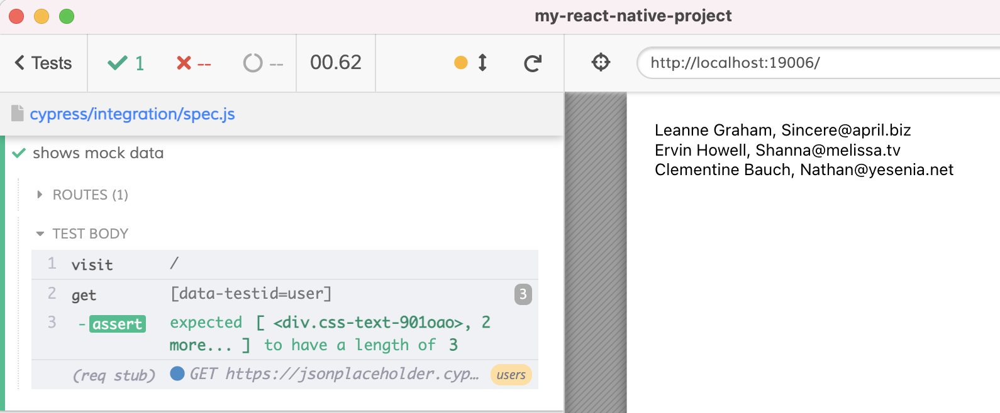
Tip: by using a network stub we can simplify our loading indicator test.
1 | it('shows loading indicator (mock)', () => { |
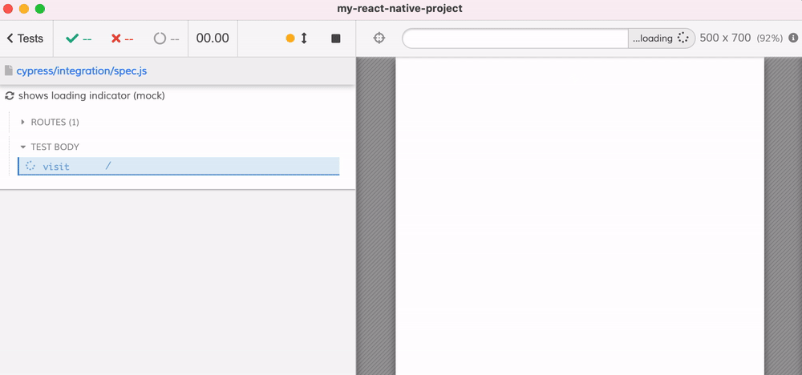
Beautiful.
Code coverage
Video: you can watch me achieve 100% code coverage through end-to-end tests in the video Adding Code Coverage To React Native Tests embedded below
We can write a lot of tests, but did we cover all major application features? Are there parts of the code still not covered by the tests? Are there edge cases that remain hidden from the tests, ready to strike? Let's make sure our tests are complete by collecting the code coverage information during our tests.
Good news: end-to-end tests are extremely effective at covering a lot of code really quickly.
To generate the code coverage reports, I will follow the Cypress code coverage guide. We need to instrument the application source code with the statement, line, branch, and function counters, luckily there is a Babel plugin for this.
1 | $ npm i -D babel-plugin-istanbul |
Now let's update the Babel config file to insert the above plugin into the Expo's code transformation pipeline.
1 | module.exports = function(api) { |
Tip: you can conditionally load the code instrumentation plugin only during end-to-end testing.
1 | module.exports = function(api) { |
You can verify the code coverage is working by opening the browser's DevTools and checking the window.__coverage__ property.
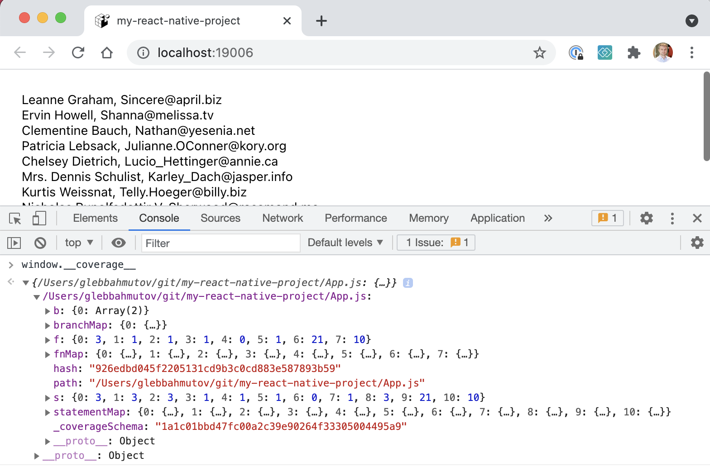
Now let's generate the code coverage reports after the tests finish. To do this, install the Cypress code coverage plugin.
1 | $ npm i -D @cypress/code-coverage |
To use the plugin during the tests, we need to use Cypress support and plugin files.
1 | import '@cypress/code-coverage/support' |
1 | module.exports = (on, config) => { |
Let's start the tests. We will see additional log messages from the code coverage commands.
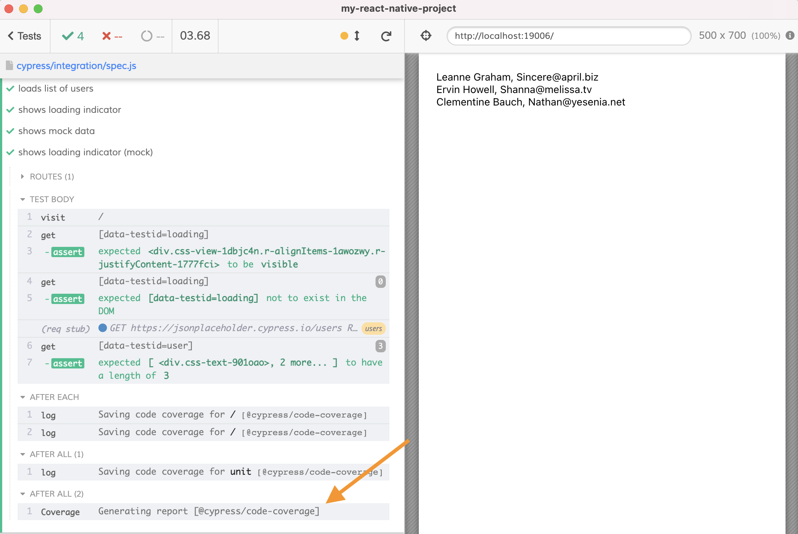
After the tests finish, you can find the coverage results in several formats in the folder "coverage".
Tip: ignore the intermediate code coverage results and the generated folder
1 | $ git ignore .nyc_output/ coverage/ |
Load the static HTML report in your browser with open coverage/lcov-report/index.html. It shows the single source file covered at 90% by our tests.
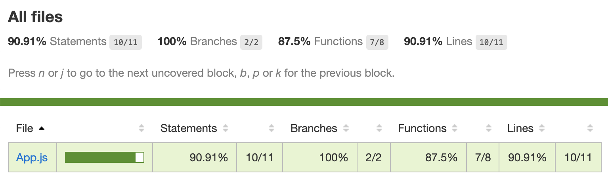
Drill into the file report and see the statements NOT covered by our tests marked in red:
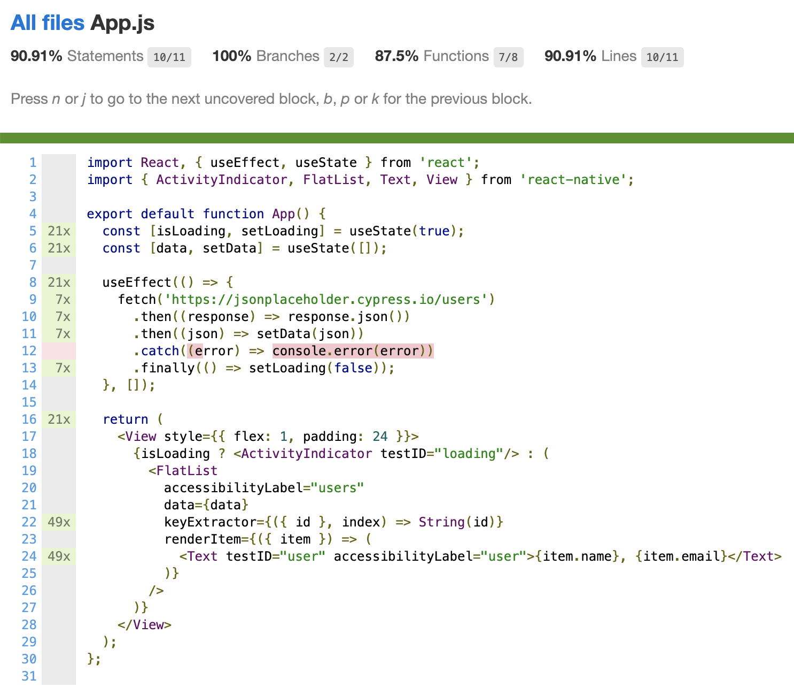
Looks like our tests missed an important application behavior - handling the error response from the server. Good thing the code coverage told us about it. Let's write a test that simulates a network error during the application's Ajax request.
1 | it('handles network error', () => { |
When all tests run, the code coverage shows 100% coverage.
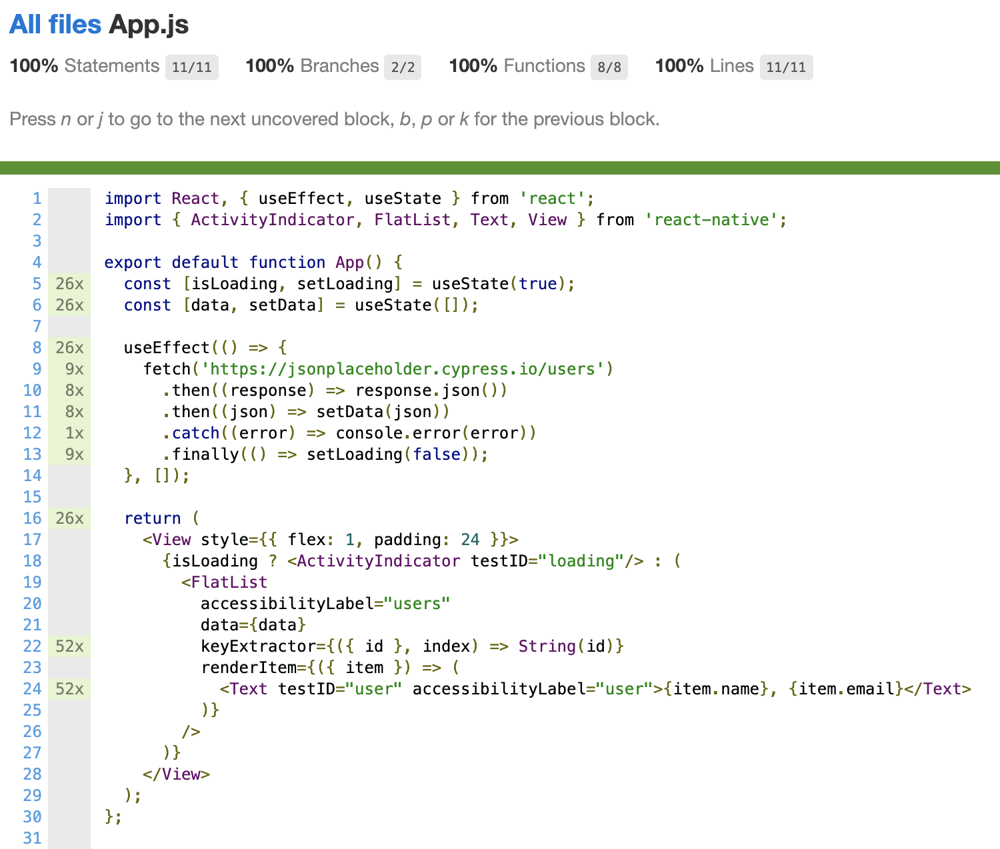
Just remember, the full code coverage is easy to achieve using Cypress tests, but it does not guarantee the application has zero bugs or does what the user needs.
See also: my other code coverage posts and Cypress Codecov webinar.
What else?
If you are worried about visual regressions in your application, these Cypress tests can implement visual testing using open-source or commercial plugins.
You can make sure the edge cases are covered by adding API tests as needed (probably guided by the code coverage reports).
Finally, I will be looking at using the Cypress component testing together with React Native libraries to perform the component testing in isolation.
🧭 You can find the source code at bahmutov/my-react-native-project
Help wanted
Do you want to help me write and test similar React Native applications at Mercari US? We need every technologist, from the web to the backend, to micro-services, to quality assurance, machine learning, AI, and other buzzwords. All positions are listed at https://www.mercari.com/careers/ and are remote in United States and Japan, and I guarantee a healthy professional environment with solid benefits and a huge career potential. If you ping me, I promise to answer your questions and do a referral. Career tip: read the blog posts Help Me Say Yes and Don't help me say No before applying.
See also
Blog posts
Presentations
I have recently shown how to test ReactNative apps using the browser at ReactConf Finland 2021. You can flip through the slides below and watch the video of the talk.
Resources
The only other resource on testing React Native apps using Cypress I could find was the article E2E Testing of React Native Apps using Cypress by the most awesome Justin Noel.
react-native-web
I have also looked at adding Cypress tests to RN project that uses react-native-web to run in the browser. Find the code and linked videos at bahmutov/react-native-web-example.
Adding expo to react-native projects
You can add Expo to an existing react-native project, see bahmutov/react-native-to-expo repo. Then you can start using Cypress to run E2E tests.
Expo camera
I have experimented with mocking Expo Camera control in bahmutov/expo-camera-test. Currently, it seems we can mock native methods when needed.
Code examples
For more source code examples, check out GitHub topic cypress-react-native-example